| NGP | CAA3A827 | Baseball Stars - Pocket Sports Series (Japan, Europe) (En,Ja) | 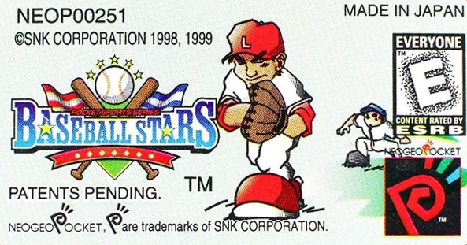 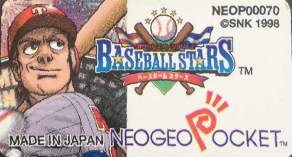 |
| NGP | DCEB7E11 | King of Fighters R-1 - Pocket Fighting Series (Japan, Europe) (En,Ja) | 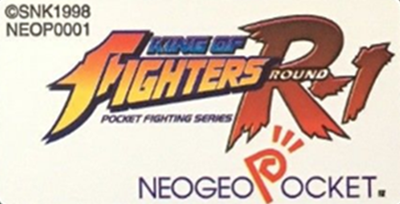 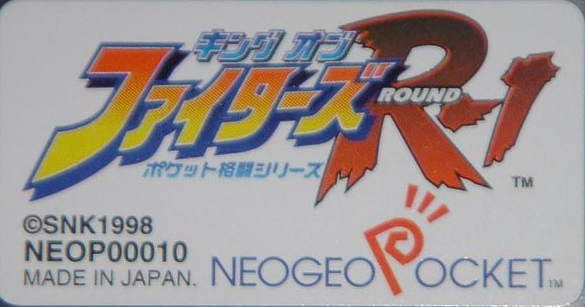 |
| NGP | C4E58FD2 | Melon-chan no Seichou Nikki (Japan) | 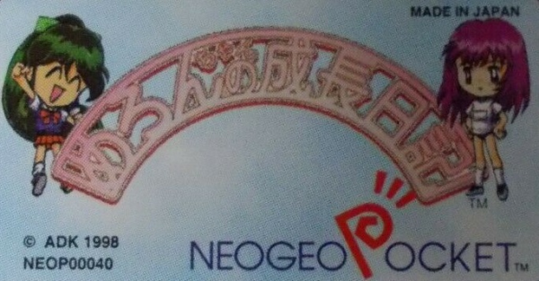 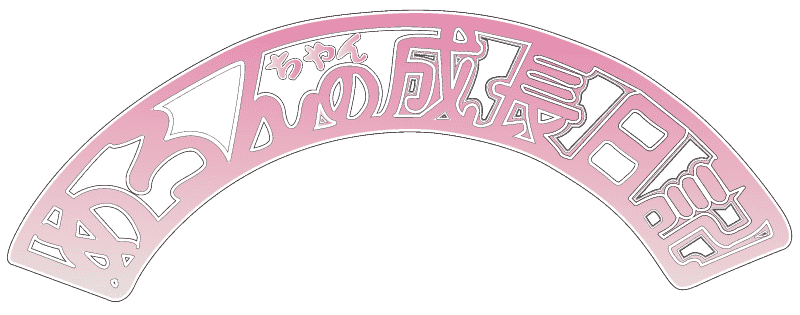 |
| NGP | D5B4696C | Neo Cherry Master - Real Casino Series (Japan) (En,Ja) | 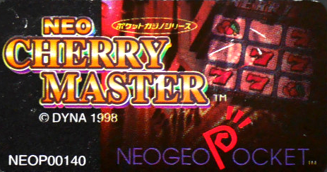 |
| NGP | 33ADD5BD | NeoGeo Cup '98 (Japan, Europe) (En,Ja) | 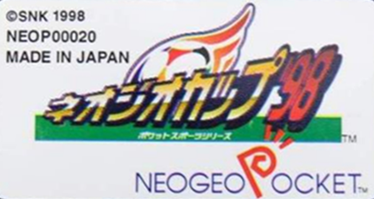 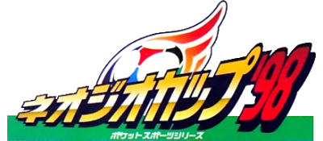 |
| NGP | 4B1EED05 | Pocket Tennis - Pocket Sports Series (Japan, Europe) (En,Ja) | 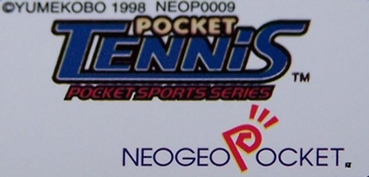 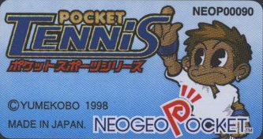 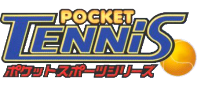 |
| NGP | CE09F534 | Renketsu Puzzle Tsunagete Pon! (Japan) | 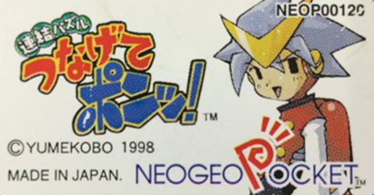 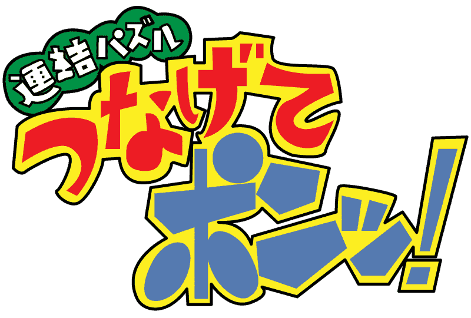 |
| NGP | 32E4696A | Samurai Shodown! - Pocket Fighting Series (Japan, Europe) (En,Ja) | 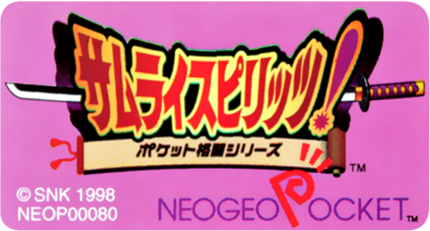 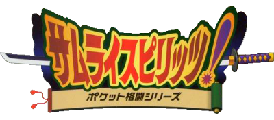 |
| NGP | F34D0C9B | Shougi no Tatsujin (Japan) | 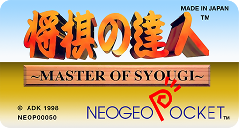 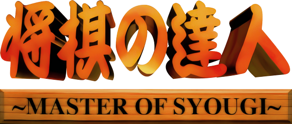 |
| NGPC | BE913CFA | Bakumatsu Rouman Tokubetsu Hen - Gekka no Kenshi - Tsuki ni Saku Hana, Chiri Yuku Hana (Japan) | 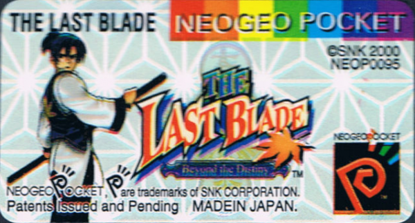 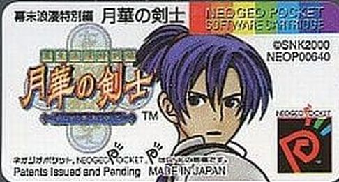 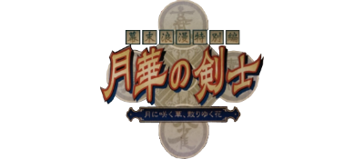 |
| NGPC | D1434DF5 | Baseball Stars Color - Pocket Sports Series (World) (En,Ja) | 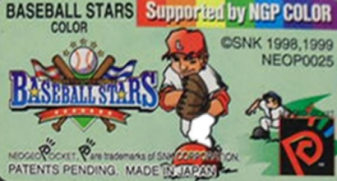 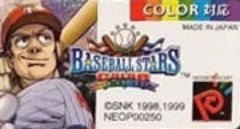 |
| NGPC | F1716FDF | Big Bang Pro Wrestling (Japan) (En,Ja) | 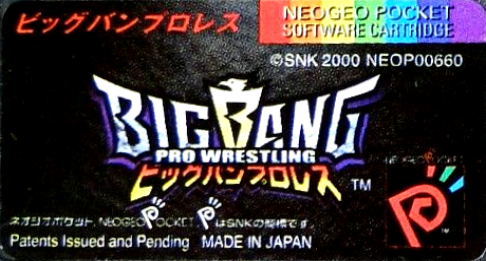 |
| NGPC | 7A2D7635 | Bikkuriman 2000 - Viva! Pocket Festival! (Japan) | 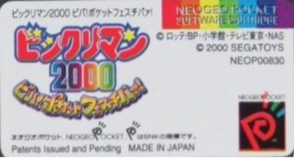 |
| NGPC | FCBBE494 | Biomotor Unitron (Japan) | 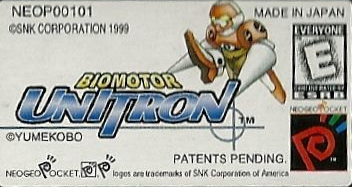 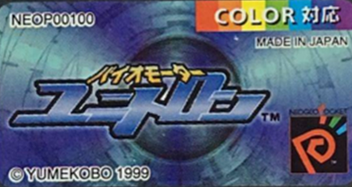 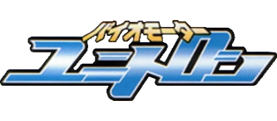 |
| NGPC | 3807DF4F | Biomotor Unitron (USA, Europe) | |
| NGPC | B073D601 | Bust-A-Move Pocket (USA) | 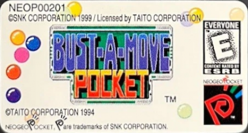 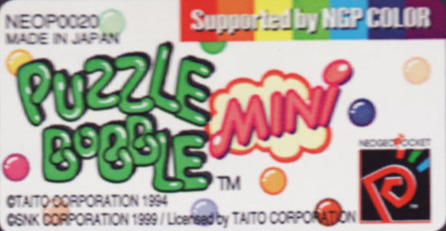 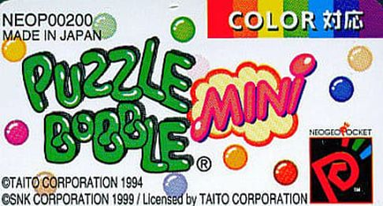 |
| NGPC | 2ED72635 | Cool Boarders Pocket (Japan, Europe) (En,Ja) | 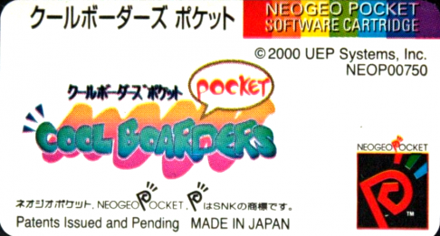 |
| NGPC | 0FD6F378 | Cool Cool Jam (Japan) | 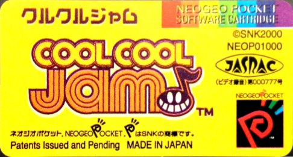 |
| NGPC | 4D8D27F0 | Cool Cool Jam (USA) (Proto) | |
| NGPC | F20FF9F2 | Crush Roller (World) (En,Ja) | 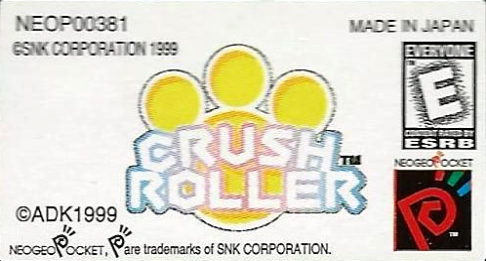 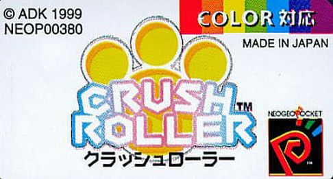 |
| NGPC | 77CAA548 | Dark Arms - Beast Buster 1999 (World) (En,Ja) | 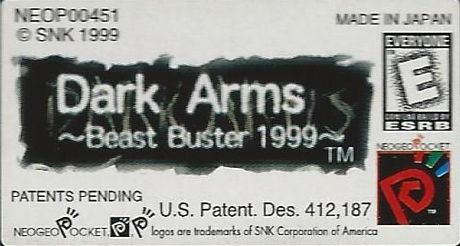 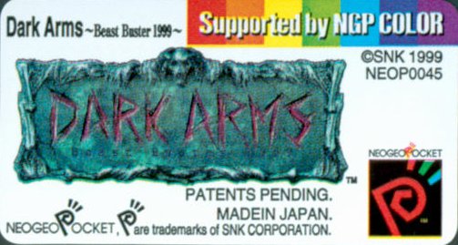 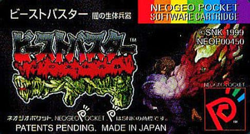 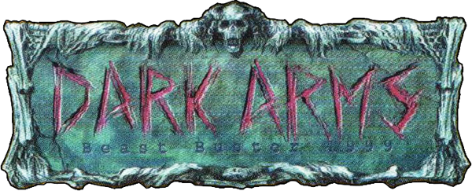 |
| NGPC | 1273B10E | Delta Warp (Japan) (En,Ja) | 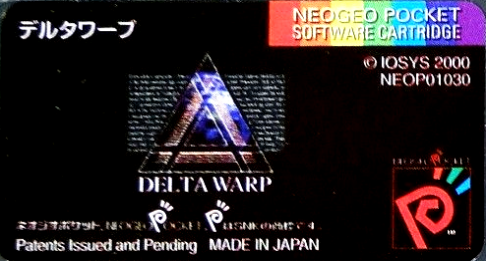 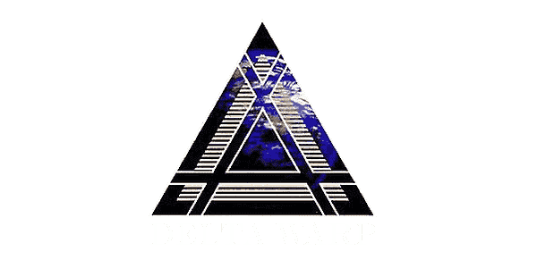 |
| NGPC | EEEEFD6A | Densetsu no Ogre Battle Gaiden - Zenobia no Ouji (Japan) | 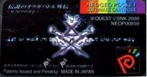 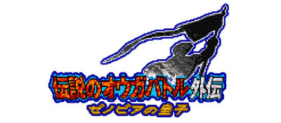 |
| NGPC | A0334549 | Densha de Go! 2 on NeoGeo Pocket (Japan) | 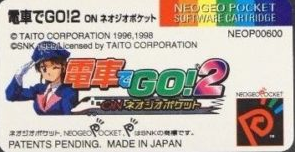 |
| NGPC | 83DB5772 | Dive Alert - Becky's Version (USA, Europe) | 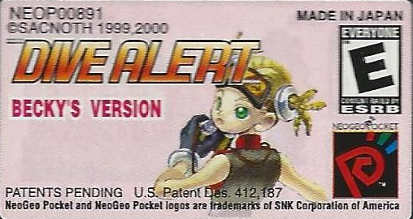 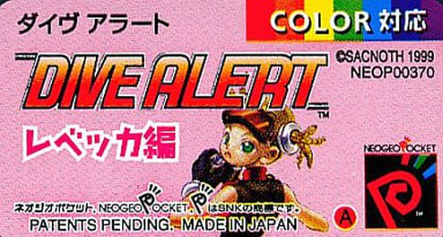 |
| NGPC | C213941D | Dive Alert - Burn Hen (Japan) | 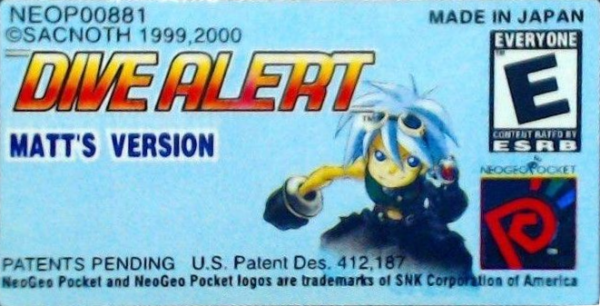 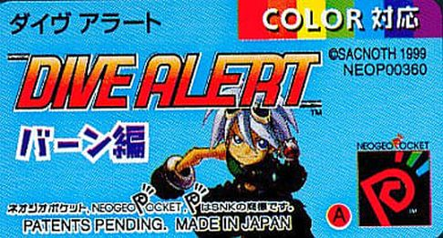 |
| NGPC | EF75081B | Dive Alert - Matt's Version (USA, Europe) | |
| NGPC | 3C4AF4F5 | Dive Alert - Rebecca Hen (Japan) | |
| NGPC | 78C21B5E | Dokodemo Mahjong (Japan) | 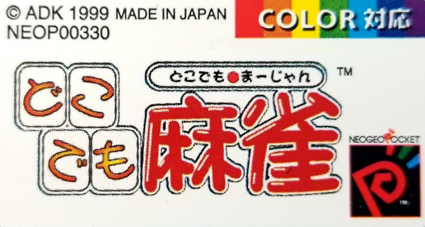 |
| WS | 095900C4 | 15 Game (World) (Ja) (WonderWitch) | no label |
| WS | 38407674 | 15 Puzzle (World) (WonderWitch) | no label |
| WS | 71A16583 | 15 Puzzle for WW (World) (Ja) (WonderWitch) | no label |
| WS | C463C126 | 50 Oto Nyouryoku (World) (Ja) (WonderWitch) | no label |
| WS | ABD2BD16 | 7 Days Left (World) (Ja) (v1.00) (WonderWitch) (WWGP2002) | no label |
| WS | 553B1D62 | 7 Days Left (World) (Ja) (v1.01) (WonderWitch) | no label |
| WS | 425EB893 | Anchorz Field (Japan) | 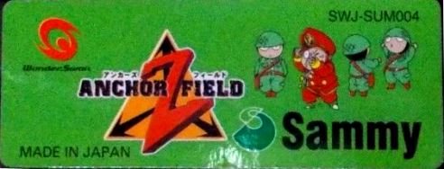 |
| WS | 04366D92 | Armored Unit (Japan) | |
| WS | 23392AB9 | Atakshii (World) (Ja) (WonderWitch) | no label |
| WS | 1630D75E | Atodashi (World) (WonderWitch) | no label |
| WS | EEFB1773 | B.A.F. (World) (Proto) (WonderWitch) | no label |
| WS | E0021D6B | BNU (World) (v1.1) (WonderWitch) | no label |
| WS | 392DD813 | Bakusou Dekotora Densetsu for WonderSwan (Japan) | |
| WS | 1E87BE36 | Ball and Block (World) (WonderWitch) | no label |
| WS | CEAEB5D3 | Balloon (World) (WonderWitch) | no label |
| WS | B4790749 | Battle Mosquito (World) (Ja) (WonderWitch) | no label |
| WS | B25A0635 | Buffers Evolution (Japan) | |
| WS | 0FC80E7F | Buro (World) (WonderWitch) | no label |
| WS | ADB27977 | C-Man (World) (Ja) (WonderWitch) | no label |
| WS | 7F3A14C0 | Cardcaptor Sakura - Sakura to Fushigi na Clow Card (Japan) | |
| WSC | A6A6EC51 | 3D Othello (World) (Ja) (WonderWitch) | no label |
| WSC | B0A64ACE | 4 Koma TV (World) (Ja) (WonderWitch) | no label |
| WSC | B18CDC0D | Alchemist Marie & Elie - Futari no Atelier (Japan) | |
| WSC | D7A0AB74 | Another Heaven - Memory of those Days (Japan) (WS Compatible) | |
| WSC | E2317345 | Arc the Lad - Kishin Fukkatsu (Japan) | |
| WSC | 37F78F4B | Arial (World) (v0.21) (Proto) (WonderWitch) | no label |
| WSC | 4567FB44 | Artisan (World) (WonderWitch) | no label |
| WSC | 758299F9 | Arubi (World) (Ja) (v0.08) (Proto) (WonderWitch) | no label |
| WSC | C1CE966F | Atchi Muite Hoitsu! (World) (Ja) (WonderWitch) | no label |
| WSC | 23E814CC | Atop the Witch's Tower (World) (v1.1) | |
| WSC | 930D66AA | BOM Danna (World) (Ja) (WonderWitch) | no label |
| WSC | A28D3DC5 | Battle Spirit - Digimon Frontier (Japan) | |
| WSC | 8BA49DAB | Battle Spirit - Digimon Frontier (Japan) (Rev 1) | |
| WSC | 60C6B1A6 | Bio Worms (World) (WonderWitch) | no label |
| WSC | 3DB4BAB8 | BloodStorm (World) (WonderWitch) | no label |
| WSC | 99027238 | Blue Wing Blitz (Japan) (WS Compatible) | |
| WSC | 43167BF8 | Bury (World) (WonderWitch) | no label |
| WSC | B9C79859 | CNLink (World) (Ja) (WonderWitch) | no label |
| WSC | 37738113 | Canon Hockey (World) (WonderWitch) | no label |
| WSC | 4FE0C856 | Cardinal Sins - Recycle Edition (World) (Ja) (v1.00) (WonderWitch) | |
| GG | F85A8CE8 | 5 in One FunPak (USA) | |
| GG | 1D17D2A0 | Aa Harimanada (Japan) | |
| GG | 1D01F999 | Addams Family, The (World) | |
| GG | BB4F23FF | Adventures of Batman & Robin, The (USA, Europe, Brazil) (En) | |
| GG | 3E549B7A | Aerial Assault (World) | |
| GG | 04FE6DDE | Aerial Assault (World) (Rev 1) | |
| GG | FE76BEB0 | Aerial Mini (World) | no label |
| GG | 770E95E1 | Aladdin (Japan) (En) | |
| GG | 7A41C1DC | Aladdin (USA, Europe, Brazil) (En) | |
| GG | 06F6EEBB | Alien 3 (Japan) (En) | |
| GG | 11A68C08 | Alien 3 (USA, Europe) | |
| GG | BB5E10E0 | Alien Syndrome (Europe) | |
| GG | FFE4ED47 | Alien Syndrome (Japan) (En) | |
| GG | 46C9FA3E | Andre Agassi Tennis (USA) | |
| GG | B781327E | Antiair Mini (World) | no label |
| GG | 3DECA813 | Arcade Classics (USA) | |
| GG | F0204191 | Arch Rivals - The Arcade Game (USA) | |
| GG | 152F0DCC | Archer Maclean's Dropzone (Europe) | |
| GG | 7CB3FACF | Arena (USA, Europe) | |
| GG | 97E3A18C | Ariel - The Little Mermaid (USA, Europe, Brazil) (En) | |
| SMS | 4342DB9D | 11 Hap Gam-Boy (Korea) | no label |
| SMS | BA5EC0E3 | 128 Hap (Korea) | no label |
| SMS | 1B3E032E | 2 Hap in 1 - Moai-ui Bomul + David II (Korea) | no label |
| SMS | F0F35C22 | 20 em 1 (Brazil) | |
| SMS | 50FD512C | 2048 (World) | no label |
| SMS | 73B81B33 | 2048 (World) (v1.01) | no label |
| SMS | 8BAFC771 | 2048 (World) (v1.02) | no label |
| SMS | 4B7A237D | 2048-SMS! (World) | no label |
| SMS | 98AF0236 | 3 in 1 - The Best Game Collection (A) (Korea) (En) | no label |
| SMS | 6EBFE1C3 | 3 in 1 - The Best Game Collection (B) (Korea) (En) | no label |
| SMS | 81A36A4F | 3 in 1 - The Best Game Collection (C) (Korea) (En) | no label |
| SMS | 8D2D695D | 3 in 1 - The Best Game Collection (D) (Korea) (En) | no label |
| SMS | 82C09B57 | 3 in 1 - The Best Game Collection (E) (Korea) (En) | no label |
| SMS | 4088EEB4 | 3 in 1 - The Best Game Collection (F) (Korea) (En) | no label |
| SMS | 498EB64C | 3D Alien Maze (World) | no label |
| SMS | 3EBFA51B | 3D City (World) | no label |
| SMS | EADE1A56 | 3D Maze in 3D, The (World) (Proto) | no label |
| SMS | A67F2A5C | 4 PAK All Action (Australia) | |
| SMS | FBA94148 | 8 in 1 - The Best Game Collection (A) (Korea) (En) | no label |
| SMS | 8333C86E | 8 in 1 - The Best Game Collection (B) (Korea) (En) | no label |
| LYNX | 2F5C3E31 | 2048 (World) | no label |
| LYNX | A73938F5 | 2048 (World) | no label |
| LYNX | E55A9ED0 | 2048 (World) | no label |
| LYNX | 04444023 | 4Ttude (World) (v1.0) (Atari Lynx 30th Birthday) | |
| LYNX | B651D8CA | 4Ttude (World) (v1.0) (Atari Lynx 30th Birthday) | |
| LYNX | 11F62511 | 4Ttude (World) (v1.1) | |
| LYNX | E2ED27FD | 4Ttude (World) (v1.1) | |
| LYNX | 2157CD39 | 4Ttude (World) (v1.2) | |
| LYNX | 3941A51D | 4Ttude (World) (v1.2) | |
| LYNX | F6FB48FB | A.P.B. (USA, Europe) | |
| LYNX | 0F5C46C3 | Alien (World) (v1.02) | |
| LYNX | 1F324A19 | Alien (World) (v1.02) | |
| LYNX | 4F46E18B | Alien (World) (v1.03) | |
| LYNX | 6ABC548C | Alien (World) (v1.03) | |
| LYNX | 399592DE | Alien (World) (v1.04) | |
| LYNX | 447A8386 | Alien (World) (v1.04) | |
| LYNX | A7B2C685 | Alien (World) (v1.06) | |
| LYNX | FB03EE88 | Alien (World) (v1.06) | |
| LYNX | 540E9BB7 | Alien vs Predator (Europe) (Proto) | |
| LYNX | A6BD9B4A | Allein (World) (De) | no label |
| POKEMINI | 296DA9BB | Mini Running Ant (World) | |
| POKEMINI | 00D8C968 | Pichu Bros. Mini (Japan) | |
| POKEMINI | BE22866A | Pichu Bros. Mini - Hoppip's Jump Match (Japan) (Preview) | |
| POKEMINI | A22D00A7 | Pichu Bros. Mini - Netsukikyuu (Japan) (Preview) | |
| POKEMINI | DEC65262 | Pichu Bros. Mini - Skateboard (Japan) (Preview) | |
| POKEMINI | 199D7AB1 | Pokemon Anime Card Daisakusen (Japan) | |
| POKEMINI | 54ACB670 | Pokemon Party Mini (Europe) | |
| POKEMINI | AE2DDE60 | Pokemon Party Mini (Japan) | |
| POKEMINI | 938D3819 | Pokemon Party Mini (USA) | |
| POKEMINI | 0E1E150B | Pokemon Party Mini - Baseline Judge (Europe) (GameCube) | |
| POKEMINI | F5192440 | Pokemon Party Mini - Baseline Judge (Japan) (GameCube) | |
| POKEMINI | 0CFB4D1C | Pokemon Party Mini - Baseline Judge (USA) (GameCube) | |
| POKEMINI | BA504497 | Pokemon Party Mini - Chansey's Dribble (Europe) (GameCube) | |
| POKEMINI | F15964AF | Pokemon Party Mini - Pikachu's Rocket Start (Europe) (GameCube) | |
| POKEMINI | D09DB45C | Pokemon Party Mini - Ricochet Dribble (Japan) (GameCube) | |
| POKEMINI | 3322ED38 | Pokemon Party Mini - Ricochet Dribble (USA) (GameCube) | |
| POKEMINI | 44C5271E | Pokemon Party Mini - Rocket Start (USA) (GameCube) | |
| POKEMINI | 9FD4D48B | Pokemon Party Mini - Slowking's Judge (Europe) (GameCube) | |
| POKEMINI | 398D47DE | Pokemon Pinball Mini (Japan) | |
| POKEMINI | A0091534 | Pokemon Pinball Mini (USA, Europe) |